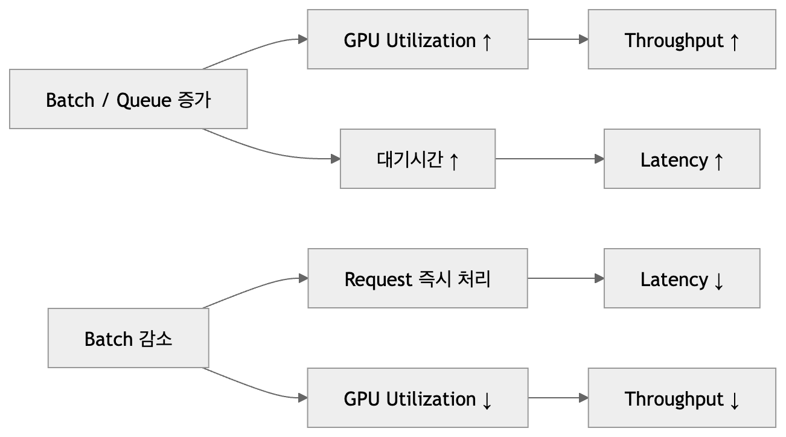
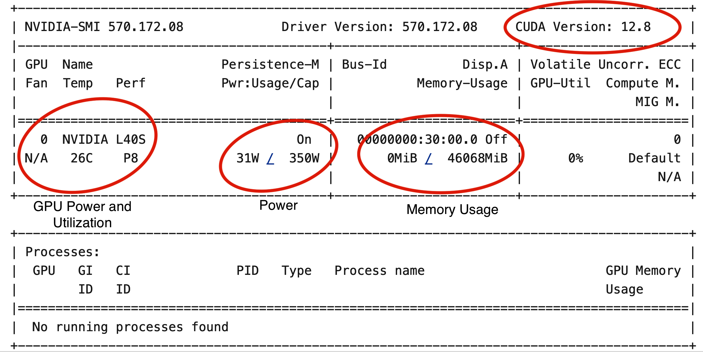
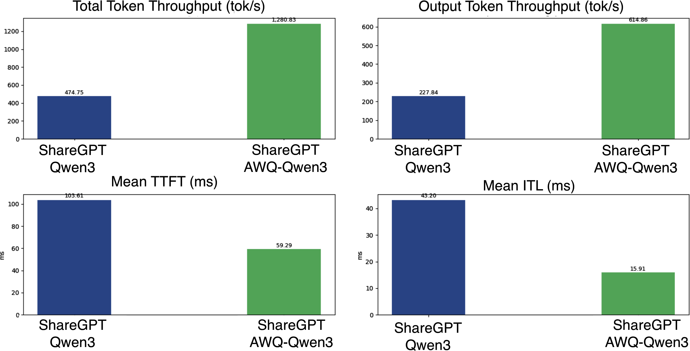
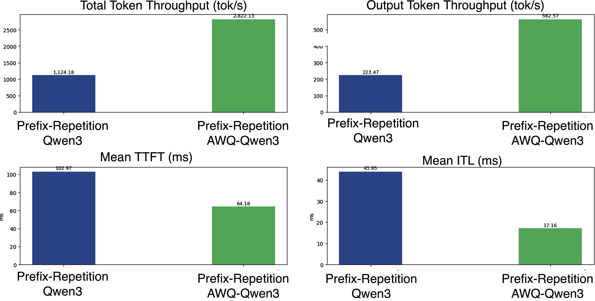
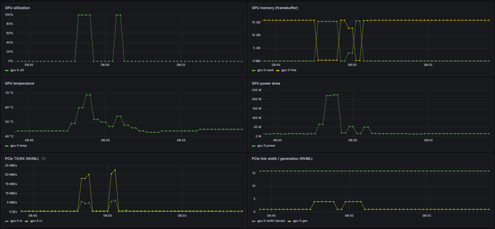
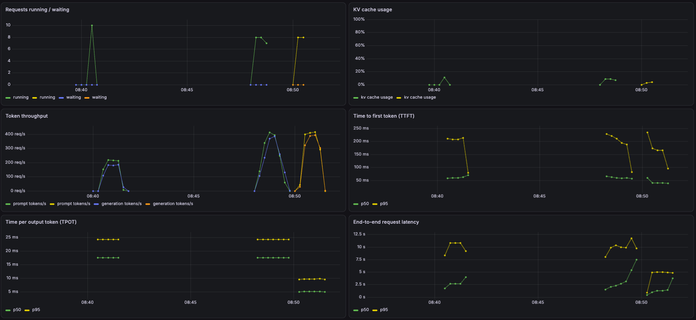
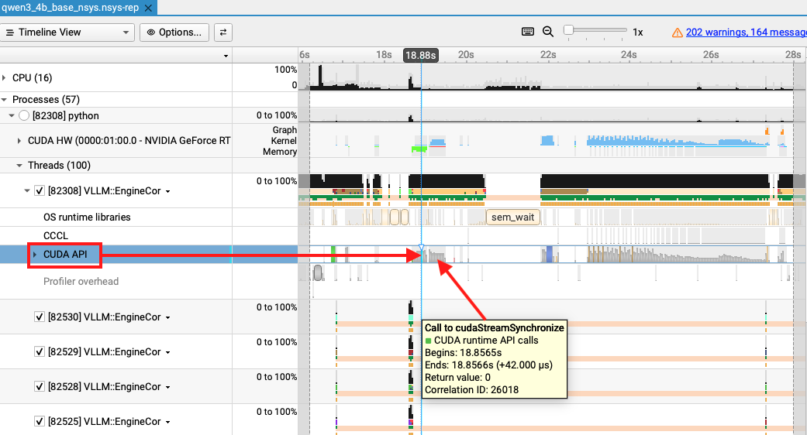
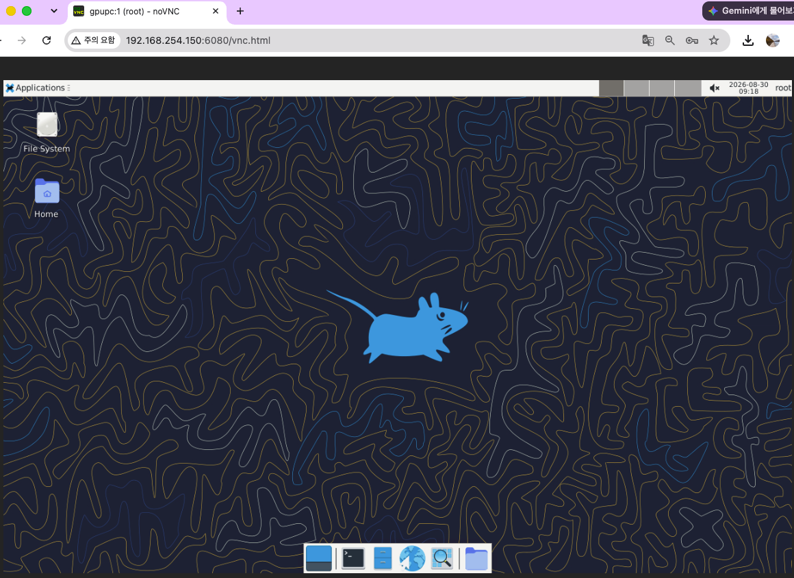
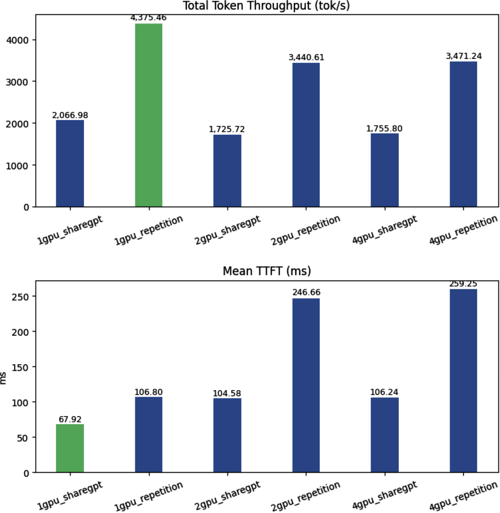
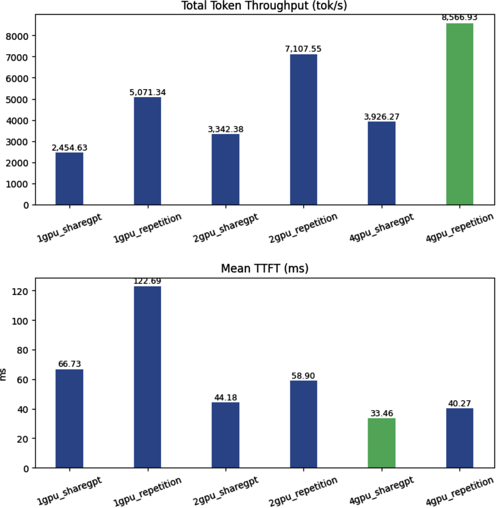

시작하며: 8단계 최적화 계획
이 챕터의 핵심 메시지는 단순합니다. "최적화는 고정된 정답이 없는 움직이는 목표(Moving Target)다." 환경마다 최선의 전략이 달라지고, 자원은 한정되어 있어 모든 옵션을 무작정 다 시도해볼 수 없습니다. 그래서 이 챕터는 하드웨어 구성, 모델 선택, 메모리/KV 캐시 동작, 분산 서빙, 트래픽 패턴이 서빙 성능에 미치는 영향을 실제 사례로 보여주고, 이를 측정·해석하는 방법을 가르쳐 각자의 제약 조건 안에서 좋은 서빙 구성으로 수렴할 수 있는 "직관"을 길러주는 것이 목표입니다.
실습 대상은 Qwen/Qwen3-14B[1] 모델 + vLLM이며, 목표는 온라인 서빙 환경에서 단일 모델 인스턴스의 토큰 처리량(Total Token Throughput) 최대화입니다. 대부분의 LLM 과금 모델이 처리된 토큰 수를 기준으로 하므로, 같은 GPU 비용으로 처리량을 3배 늘리면 토큰당 비용은 1/3로 줄어듭니다.
이 챕터 전체는 "같은 주방(GPU)에서 더 많은 손님(요청)을 받으려면 무엇을 바꿔야 하는가"라는 질문에 답하는 실습입니다. 재료(하드웨어)부터 확인하고, 실제 주문 패턴(트래픽)을 파악하고, 조리대(KV 캐시)를 넓히고, 마지막엔 주방을 늘릴지(분산 서빙) 요리사를 더 뽑을지(레플리카)를 결정합니다.
처리량과 지연시간의 트레이드오프
높은 처리량을 얻으려면 요청을 배칭하거나 큐잉해서 하드웨어 활용도를 높여야 하는데, 이는 대기 시간을 유발해 요청당 지연시간을 늘립니다. 반대로 최저 지연시간만 추구하면 요청이 도착하는 즉시 낮은 병렬성으로 처리하게 되어, 자원 활용도가 떨어지고 전체 처리량이 낮아집니다. 실무에서는 일반적으로 지연시간을 허용 가능한 범위 내로 유지하면서 처리량 개선을 우선합니다.
flowchart TD
subgraph TradeOff["처리량 vs 지연시간 트레이드오프"]
A["배치 크기 & 동시성 증가"] --> B["GPU 연산 포화 / 활용률 극대화"]
B --> C["총 처리량(TPS) 대폭 상승"]
A --> D["큐 대기 시간 & 스케줄링 지연 증가"]
D --> E["요청당 지연시간(TTFT/ITL) 증가"]
end
📌 가장 중요한 결론 6가지 (원문 그대로 인용)
- 무조건 Multi-GPU가 빠른 것이 아니다.
- 모델을 작게 만들면 단순히 VRAM만 절약되는 것이 아니라 KV Cache 공간과 concurrency가 늘어 throughput까지 크게 증가할 수 있다.
- 반복 Prefix가 많은 workload에서는 cache reuse가 엄청난 차이를 만든다.
- Throughput과 Latency는 종종 trade-off 관계다.
- 대부분의 production workload에서는 single-GPU replica를 여러 개 두는 horizontal scaling이 throughput 측면에서 유리할 수 있다.
- 반대로 모델이 한 GPU에 안 들어가거나 per-request latency를 줄여야 한다면 TP 기반 vertical scaling이 필요하다.
이 6가지 결론이 이 챕터 전체의 결말이자 안내판입니다. 아래 8단계를 하나씩 밟아가며, 왜 이런 결론에 도달하는지 직접 확인해봅시다.

실습 환경은 3가지 중 하나를 고를 수 있습니다: ① AWS EC2 g6e.2xlarge(NVIDIA L40S, G계열 quota 8 필요), ② Runpod A40 48GB(약 $0.44, PyTorch 2.8.0 + Jupyter), ③ 개인 RTX 데스크탑(VRAM 크기에 맞는 모델 선택 — 이 챕터에서는 RTX 4070 Ti SUPER 16GB로 Qwen3-4B bf16→AWQ 4bit을 별도 실습합니다).
Step 1. GPU 하드웨어 점검 (Examine the GPU Hardware)
최적화 작업의 첫 단계는 코드를 짜기 전에 하드웨어 스펙과 현재 상태를 파악하는 것입니다. nvidia-smi는 벤치마크 시작 전 "사전 점검(pre-flight check)" 도구로, 드라이버/CUDA 호환성, 전력·사용률 지표, 메모리 여유분을 한눈에 보여줍니다.
엔진 출력, 잔여 연료, 통신 장비가 정상인지 확인하지 않고 활주로를 달리면 사고가 나듯, GPU의 드라이버 호환성, 유휴 상태(Idle), 전력 상태를 확인하지 않고 벤치마크를 돌리면 비정상적인 결과가 나옵니다.
- CUDA/드라이버 버전: 선택한 서빙 프레임워크와 호환되는지 확인
- Performance State:
P8은 GPU가 유휴(idle) 상태, 서빙이 활발히 진행 중일 때는P0또는P1(최고 속도) - 전력 사용량 및 GPU 사용률: 부하가 있는데 사용률이 낮으면 배칭/스케줄링 비효율, 전력은 높은데 처리량이 낮으면 메모리 병목/커널 비효율을 의심
- 메모리 사용량: 현재 할당된 GPU 메모리량

g6e.2xlarge에서의 nvidia-smi 출력 — NVIDIA L40S, Driver 570.172.08, CUDA 12.8, Perf State P8(유휴), 26°C, 31W/350W, 0MiB/46,068MiB(약 46GB), GPU-Util 0%로 완전한 유휴 상태를 보여줍니다.⚠ 정정(교차검증 반영): 원문 텍스트에는 Figure 9-1 바로 아래에 다른 GPU(RTX 4070 Ti SUPER, Driver 595.84, CUDA 13.2, 15W/285W, 18MiB/16,376MiB)의
nvidia-smi예시 코드블록이 그대로 남아 있어, 리서치 초안 중 하나는 이 값을 Figure 9-1(L40S)의 값으로 잘못 인용했습니다. 이 문서에서는 이미지를 직접 재확인해 Figure 9-1은 L40S/570.172.08/12.8이 맞다는 점을 정정했습니다. RTX 4070 Ti SUPER 수치는 이 챕터 뒤쪽의 "RTX 4070 별도 실습"에서 실제로 사용되는 값입니다.
nvidia-smi
nvidia-smi --query-gpu=name,compute_cap,memory.free,memory.used,memory.total --format=csvStep 2. 벤치마크 트래픽 생성 (Generate Benchmark Traffic)
"아무 프롬프트나 넣고 측정하면 실서비스와 전혀 다른 결과를 얻는다" — 이것이 이 단계의 출발점입니다. 긴 입력이 지배적인 워크로드(프리필 위주)와 긴 출력이 지배적인 워크로드(디코딩 위주)는 서로 다른 최적화 전략을 요구하므로, 데이터셋 선택이 최적화 방향을 결정합니다.
시내 주행용 연비와 고속도로 주행용 연비는 완전히 다릅니다. 시내 셔틀버스를 고속도로 최고속도로 테스트하면 엉뚱한 결론이 나오듯, 챗봇 모델은 실제 대화 패턴 데이터로 테스트해야 합니다.
두 데이터셋을 상호보완적으로 사용합니다:
- ShareGPT: 실제 대화 트래픽을 근사, 서빙 효율·응답성(사용자 경험) 평가용. 100개 샘플 통계는 Prompt 평균 232.60 토큰(중앙값 141.50), Output 평균 220.61 토큰(중앙값 164.50)으로, 입출력 길이가 비교적 균형 잡힌 대화형 트래픽입니다.
- Prefix Repetition: 공통 접두사(prefix) + 반복/유사 접미사(suffix) 구조의 합성 데이터셋. 모델의 반복 편향을 테스트하고, prefix caching이 실제로 처리량을 높이는지 확인하는 용도입니다. 고유 접두사 개수를 줄일수록 캐시 히트율이 높아지는 트래픽을 인위적으로 만들 수 있습니다.
inspect_dataset.py[2] 헬퍼 스크립트는 vllm.benchmarks.datasets의 실제 로더로 데이터셋을 불러와 길이 분포(min/max/mean/median/std)와 ASCII 히스토그램을 출력합니다 — 실제 부하 테스트 전에 "지금 어떤 트래픽을 보내려는가"를 먼저 눈으로 확인하는 것입니다.
# ShareGPT 100개 샘플 통계 확인
python3 inspect_dataset.py --dataset-name sharegpt \
--dataset-path ShareGPT_V3_unfiltered_cleaned_split.json \
--model Qwen/Qwen3-14B --num-prompts 100 --save-samples
# Prefix Repetition 50개 샘플 확인
python3 inspect_dataset.py --dataset-name prefix_repetition \
--model Qwen/Qwen3-14B --num-prompts 50 \
--prefix-repetition-prefix-len 256 --prefix-repetition-suffix-len 256 \
--prefix-repetition-num-prefixes 5 --prefix-repetition-output-len 128 \
--save-samples실제 부하는 vllm bench serve[3] CLI로 생성합니다 — 프롬프트 수·request-rate·burstiness·max-concurrency를 지정해 재현 가능한 트래픽을 만들고 TPS/TTFT/지연시간을 자동 수집합니다 (Step 5에서 그대로 재사용됩니다).
vllm bench serve --backend vllm --base-url "http://localhost:8000" \
--dataset-name sharegpt --dataset-path ShareGPT_V3_unfiltered_cleaned_split.json \
--num-prompts 2000 --request-rate 10 --burstiness 1.0 \
--max-concurrency 10 --model Qwen/Qwen3-14B \
--save-result --result-filename test_serve_results.txtStep 3. 평가 지표 정의 (Define Evaluation Metrics)
전체 지표 체계는 처리량 / 지연시간 / 자원 활용도 / 워크로드 특성 / 신뢰성·비용 5개 범주지만, 이 실습은 비교의 초점을 위해 4개로 좁혔습니다: 총 토큰 처리량(TPS), 출력 토큰 처리량(TPS), 평균 TTFT, 평균 ITL. TPOT과 P99는 의도적으로 생략했습니다(다만 Step 5 로그에는 P99 ITL이 별도로 나옵니다).
주문 후 첫 음식이 나오는 시간(TTFT), 다음 코스 요리가 나오는 간격(ITL), 주방이 분당 만들어내는 총 접시 수(TPS)를 종합 평가하는 것과 같습니다. 평균 배달 시간(Mean)만 보면 유독 늦은 배달을 놓치므로, Median(보통 손님)과 P99(가장 오래 기다린 손님)도 함께 봐야 합니다.
| 지표 | 정의 | 무엇을 반영하는가 |
|---|---|---|
| 총 토큰 처리량 | (입력+출력 토큰)/초 | 시스템 전체 효율 |
| 출력 토큰 처리량 | 생성 토큰/초 | 디코딩 성능, LLM 비용의 핵심 |
| 평균 TTFT | 요청→첫 토큰까지 시간 | 프리필(Prefill) 효율성 |
| 평균 ITL | 연속 출력 토큰 간 평균 지연 | 스트리밍 체감 속도 |
Step 4. 모델 서빙 서비스 구성 (베이스라인 확보)
vllm serve Qwen/Qwen3-14B기본 설정으로 기동한 로그에서 확인되는 수치:
- 모델 로딩: 27.5185 GiB, 가중치 로드 4.47초, 모델 로드 5.265852초
- KV 캐시: 11.00 GiB / 72,064 토큰
- 요청당 40,960 토큰 기준 최대 동시성: 1.76x
- 총 46GB(46,068MiB) 중 약 38.5GiB 사용 (모델 27.5GB + KV캐시 11GB)
46평짜리 조리 공간에서 요리책과 도구(모델 가중치)가 27.5평을 차지하면, 식재료를 올려둘 도마(KV 캐시)는 11평밖에 남지 않아 한 번에 소수의 주문만 소화할 수 있습니다.
핵심 인과관계 체인(Step 6 양자화의 동기가 됩니다): KV 캐시 공간 부족 → 배치 크기 축소/캐시 축출 증가 → 재계산 증가 → GPU 효율 저하 → 처리량 저하.
⚠ 정정(원문 자체의 내적 불일치): 원문은 같은 27.5GB/46GB 비율을 두 곳에서 다르게 표현합니다 — 한 곳은 "모델 가중치가 GPU 메모리의 약 60%"라고 쓰고, 다른 곳은 "모델 자체가 GPU 메모리의 65% 이상을 차지"라고 씁니다. 실제 계산은 27.5185÷46≈59.8%로, "약 60%" 쪽이 정확합니다. "65% 이상"은 과장된 표현입니다.
Step 5. Qwen3 모델 벤치마크 (베이스라인 첫 실행)
| 지표 | ShareGPT (2,000 요청) | Prefix Repetition (1,000 요청) |
|---|---|---|
| 총 입력/출력 토큰 | 446,619 / 412,052 | 512,000 / 127,066 |
| 출력 토큰 처리량 | 227.64 tok/s | 223.31 tok/s |
| 총 토큰 처리량 | 474.38 tok/s | 1,123.13 tok/s |
| 평균 TTFT | 104.15 ms | 104.64 ms |
| 평균 ITL | 43.24 ms (P99 72.15ms) | 43.95 ms (P99 59.22ms) |
| GPU 사용률(부하 중) | - | 97% |
두 결과를 나란히 보면 총 처리량은 약 2.37배(474.38 vs 1,123.13) 차이 나지만 TTFT/ITL은 거의 동일합니다. 이는 GPU 연산 자체가 빨라진 게 아니라, prefix caching + continuous batching + 메모리 블록 공유로 "같은 계산을 반복하지 않기" 때문입니다.
⚠ 정정(교차검증 반영): 리서치 초안 중 하나는 "GPU 사용률 97%는 GPU가 병목이 아니라 이미 최대로 활용되고 있음을 뒷받침한다"고 서술했는데, 이는 과도한 해석입니다. 높은 사용률은 GPU가 바쁘다는 뜻일 뿐, GPU가 병목이 아니라는 것을 증명하지는 않습니다. 정확히는 "GPU가 높은 수준으로 활용되고 있음을 보여주며, 병목 위치를 확정하려면 TPS·전력·타임라인 등 추가 관측이 필요하다"고 표현해야 합니다.
Step 6. 양자화된 Qwen3 모델 벤치마크 (Qwen3-14B-AWQ)
AWQ(Activation-Aware Weight Quantization) 4비트 버전(Qwen3-14B-AWQ[4])으로 재기동해 동일 벤치마크를 반복합니다.
| 원본 (bf16) | AWQ (4bit) | |
|---|---|---|
| 모델 가중치 | 27.5185 GiB | 9.3619 GiB (로딩 10.65초) |
| KV 캐시 | 11.00 GiB / 72,064 토큰 | 29.15 GiB / 191,056 토큰 |
| 최대 동시성 | 1.76x | 4.66x |
모델 가중치 절감분(약 18.16GiB, 약 66% 절감)이 그대로 KV 캐시로 이동해 캐시 용량이 2.65배로 늘어났습니다.
ShareGPT 성능 개선: 총 처리량 474 → 1,280 TPS(2.7배), 평균 TTFT 103.61ms → 59.29ms(약 42% 개선). Prefix Repetition도 같은 방향으로 개선되었습니다(그림에만 제시, 본문 텍스트 수치 없음).


🧪 메모리 재분배 시각화
모델 가중치가 줄어든 공간이 그대로 KV 캐시로 이동하는 과정을 직접 토글해서 확인해보세요.
"Quantization → 모델 메모리 감소 → KV 캐시 증가 → 동시 요청 증가 → 배칭 효율 증가 → 처리량 증가"가 이 결과의 인과 체인입니다. 다만 이는 가중치 양자화(메모리·데이터 이동 절감)이며, 연산량 자체를 줄이려면 활성화(activation) 양자화가 별도로 필요합니다. 원문은 "양자화도 공짜는 아니다"라고 경고합니다 — 정확도 저하, 토큰 불안정성 등 품질 트레이드오프가 있을 수 있습니다.
Step 7. 추가 최적화 기법 적용 (워크로드 맞춤)
워크로드 유형에 따라 다른 기법을 적용합니다:
- 프리필 위주(긴 입력, 공유 컨텍스트) → LMCache(반복 접두사 KV 재사용)
- 디코딩 위주(긴 출력) → 스펙큘레이티브 디코딩(드래프트 모델)
vllm serve Qwen/Qwen3-14B-AWQ \
--quantization awq \
--gpu-memory-utilization 0.95 \
--max-model-len 1024 \
--block-size 16 \
--enable-prefix-caching \
--max-num-seqs 8 \
--max-num-batched-tokens 8192 \
--enable-chunked-prefill--block-size는 작을수록 캐시 활용도가 좋아지고, --max-num-seqs/--max-num-batched-tokens는 배칭·스케줄링을 조절합니다. 원문의 핵심 경고: "설정을 과도하게 튜닝하지 마라" — 특정 GPU/트래픽에 과최적화(overfitting)된 설정은 다른 환경에서 이식성이 떨어집니다.
출퇴근길 한 도로에 맞춰 내비게이션을 고정하면, 비 오는 날이나 다른 도시에서는 오히려 나빠집니다. 현대 서빙 프레임워크는 이미 합리적인 기본값을 추론하므로, 실무의 초점은 "완벽한 숫자 찾기"가 아니라 "어떤 기법을 쓸지 판단"에 있어야 합니다.
RTX 4070 Ti SUPER 16GB 별도 실습 & Nsight 심층 분석
책의 핵심 논리(양자화→메모리 재분배→처리량 향상)를 데스크탑 환경에서 재현합니다(--max-model-len 8192 고정, Qwen3-4B bf16 → Qwen3-4B-AWQ 4bit).
| 지표 | ShareGPT(원본) | ShareGPT(AWQ) | Prefix Rep(원본) | Prefix Rep(AWQ) |
|---|---|---|---|---|
| 모델 가중치 | 7.56 GiB | 2.50 GiB | 동일 | 동일 |
| KV캐시/토큰 | 4.74GiB/34,512 | 10.45GiB/76,064 | 동일 | 동일 |
| 최대 동시성 | 4.21x | 9.29x | 동일 | 동일 |
| 총 처리량(TPS) | 1,178 | 2,107 (+79%) | 2,733 | 3,140 (+13%) |
| 평균 TTFT | 66.2ms | 43.5ms | 87.2ms | 49.0ms |
| 평균 ITL | 16.0ms | 7.5ms | 17.0ms | 7.2ms |
가중치 약 66% 절감(7.56→2.5GiB)이 KV캐시를 2.2배(34,512→76,064 토큰)로 늘려 ShareGPT 처리량을 약 1.8배 높였습니다.
Nsight Systems 프로파일링: "진짜 병목"을 찾아서
별도로 100 prompts / max-concurrency 8 조건에서 nsys profile --trace=cuda,nvtx,osrt로 vllm serve를 감싸 실행했습니다.
⚠ 주의(조건 구분): 아래 수치(967→2,105 TPS)는 위 메인 벤치마크 표(1,178→2,107 TPS)와 서로 다른 실행 조건입니다 — 프롬프트 수가 100개로 축소되었고
nsys프로파일링 오버헤드가 포함되어 있습니다. 두 표를 같은 실행 결과처럼 섞어서 해석하면 안 됩니다.
- 처리 시간: 46.9초 → 21.5초(2.18배 단축), 총 처리량 967 → 2,105 TPS(+118%), 평균 TPOT 15.3 → 7.0ms(2.19배 개선)
- 핵심 발견 1: 총 GPU 커널 실행 시간은 원본/AWQ 모두 약 7.1초로 동일합니다. 연산량 자체가 줄어든 게 아닌데 체감 처리시간은 2.2배 단축됐습니다 — "GPU 연산 자체는 더 빨라지지 않았다"는 뜻입니다.
- 핵심 발견 2: 커널 구성 — AWQ에서도 약 35.5%가 미양자화 bf16/f16 GEMM(lm_head 등 추정)으로 남고, Marlin GEMM(4bit)이 약 35.6%, FlashAttention은 15%대로 거의 동일(양자화 대상 아님).
- 핵심 발견 3 (진짜 병목):
cudaEventSynchronize(호스트-GPU 동기화 대기)가 원본 85.2%(13.92ms/호출) → AWQ 74.6%(5.67ms/호출)로 약 2.45배 단축됐습니다. 이는 벤치마크에서 관측된 TPOT 개선(2.19배)과 방향이 비슷합니다.
요리(GPU 커널 연산) 자체는 예전과 같은 속도로 끝나는데, 서빙 담당(호스트-GPU 동기화)이 다음 주문을 준비하는 데 걸리는 시간이 줄어서 손님상에 더 빨리 나가는 것과 같습니다.
⚠ 정정(과장 주의, 교차검증 반영):
cudaEventSynchronize개선(2.45배)과 TPOT 개선(2.19배)은 방향은 같지만 배수 자체는 약 12% 상대 차이가 있습니다. 이를 "핵심 메커니즘임을 증명한다"거나 "통계적으로 동일하다"고 단정하는 것은 과장입니다 — 단일 프로파일링 비교이므로 반복·통계 검정 없이는 "같은 방향의 개선을 뒷받침하는 정황 증거" 정도로만 해석해야 합니다.
Nsight Compute 커널 단위 분석(vllm bench latency --enforce-eager, batch=8): GEMM occupancy가 bf16(원본)과 Marlin(4bit) 사이에 거의 동일(~16.7%)했습니다 — 즉 커널 자체의 효율은 양자화로 바뀌지 않으며, 처리량 차이는 "KV 캐시 확대가 만드는 배칭/스케줄링 효율화"에서 나온다는 결론을 커널 레벨에서 재확인합니다. (참고: 캐시 커널의 "Compute(SM) Throughput 25.9%/26.8%"와 "Achieved Occupancy 65.86%/65.77%"는 서로 다른 지표이므로 혼용하지 않도록 주의합니다.)
도전과제: 모니터링 파이프라인(프로메테우스+그라파나) vs Nsight 종합 분석
docker-compose.yml로 prometheus, grafana(admin/admin), node-exporter, dcgm-exporter(GPU 메트릭)를 구성합니다. GeForce 카드는 dcgm-exporter가 PCIe TX/RX 처리량을 제공하지 못하는 한계가 있어, 이를 우회하는 커스텀 익스포터 nvml_pcie_exporter.py(pynvml + prometheus_client, 포트 9401)로 PCIe TX/RX bytes·link width·generation을 1초 간격으로 폴링해 노출합니다.



qwen3_4b_base_nsys.rep 트레이스를 열어 CPU/프로세스/스레드 타임라인과 cudaStreamSynchronize 호출 지점을 확인하는 화면.
Step 8. 분산 서빙 벤치마크 (Vertical vs Horizontal Scaling)
4비트 양자화 Qwen3-14B-AWQ를 인터커넥트가 다른 두 인스턴스에서 비교합니다: g6e.12xlarge(NVIDIA L40S x4, PCIe만) vs p4d.24xlarge(NVIDIA A100 x8, NVSwitch 600GB/s).
vllm serve Qwen/Qwen3-14B-AWQ --tensor-parallel-size 2

원인은 인터커넥트입니다. NVSwitch(A100/p4d)는 저지연·고대역 GPU 간 통신(600GB/s)을 제공해 텐서 병렬화의 이득이 통신 오버헤드를 상쇄하지만, PCIe만 있는 g6e/L40S는 통신 비용이 더 커서 GPU를 늘릴수록 손해를 봅니다.
graph LR
subgraph g6e["g6e (L40S x4, PCIe)"]
G1["1-GPU: 2,067 TPS (최고)"] --> G2["2-GPU: 1,726 TPS"]
G2 --> G4["4-GPU: 1,756 TPS (최악)"]
end
subgraph p4d["p4d (A100 x8, NVSwitch)"]
P1["1-GPU: 2,455 TPS"] --> P2["2-GPU: 3,342 TPS"]
P2 --> P4["4-GPU: 3,926 TPS (최고, TTFT 33ms)"]
end
오해 정정 (중요): p4d 4-GPU 텐서 병렬 구성이 처리량·지연시간 최고였음에도, GPU마다 독립 모델 인스턴스 4개(수평 확장)를 각각 돌리면 총 처리량이 9,816 TPS로, 텐서 병렬 4-GPU(3,926 TPS) 대비 원문 표현으로는 "거의 3배"지만 실제 계산값은 약 2.5배(9,816÷3,926≈2.50)입니다.
⚠ 정정(plan.md 핵심 검증 항목): 3개 모델의 독립 리서치와 교차검증 모두 "거의 3배"라는 원문 표현이 과장된 반올림이며, 정확한 배수는 2.50배임을 확인했습니다. (9,816÷3,926.27=2.4999…)
분산 서빙의 진짜 가치는 지연시간 감소: p4d에서 GPU 1개→4개로 TTFT가 66.73ms→33.46ms(약 50% 감소, 정확히는 49.86%). 이 지연시간 개선은 수평 확장(레플리카 추가)으로는 달성할 수 없습니다 — 레플리카를 아무리 늘려도 한 요청 자체의 처리 시간(service time)은 줄지 않기 때문입니다. (다만 대기 행렬이 짧아져 큐잉 지연을 포함한 종단 간 지연시간은 개선될 수 있다는 점은 별개입니다.)
| Vertical(텐서 병렬) | Horizontal(독립 레플리카) | |
|---|---|---|
| 장점 | 큰 모델을 GPU 1장 초과해도 실행 가능, per-request latency 감소 | Total Throughput 증가, 장애 격리, 스케일링 단순 |
| 단점 | GPU 간 통신 오버헤드, 복잡도 증가 | 한 요청의 처리 시간 자체는 GPU를 늘려도 줄지 않음 |
Vertical Scaling은 "한 명의 초고속 요리사에게 조수를 붙여주는 것"(같은 주문을 더 빨리 끝냄)이고, Horizontal Scaling은 "같은 실력의 요리사를 더 채용하는 것"(동시에 더 많은 주문을 받음)입니다. 주방(GPU) 사이 통로가 좁으면(PCIe) 요리사끼리 부딪혀 오히려 늦어질 수 있습니다.
도전과제(원문 그대로 인용):
- "가급적 큰 최신의 MoE 모델 vLLM 서빙해보기: 예시) TP=2 x EP=2 = 4장 GPU 필요"
- "GPUx2 서버에서 vLLM
PP=2vsTP=2vsRouter → Replica=2비교 측정" (K3s+HAMi, vLLM-Router[5]/LoxiLB[6]/NVIDIA Dynamo Router/llm-d[7] 참고)
공통 최적화 트레이드오프 & 요약
| 트레이드오프 | 이 챕터에서 확인한 사례 |
|---|---|
| 처리량 ↔ 지연시간 | Step 5~6: 배칭·양자화로 처리량 개선, 인터랙티브 워크로드는 TTFT/ITL도 함께 챙겨야 함 |
| 메모리 효율 ↔ 모델 품질 | Step 6: AWQ 4비트로 메모리 절감·처리량 향상, 정확도 손실 가능성은 별도 고려 |
| 하드웨어 활용도 ↔ 유연성 | Step 7: "과최적화 금지" 경고 |
| 수직 확장 ↔ 수평 확장 | Step 8: g6e에서는 분산이 손해, 독립 레플리카 4개가 텐서 병렬 4-GPU보다 처리량 약 2.5배 |
| 정적 최적화 ↔ 적응형 서빙 | 이 실습 자체가 고정 파라미터 기반 정적 최적화 |
최적화는 보편적 최선의 설정을 찾는 것이 아니라 지배적 병목을 이해하고 적절한 레벨에서 기법을 적용하는 것입니다. 시나리오(비즈니스 사용 사례, 트래픽 패턴, 성능 목표) 이해부터 시작해, 대표성 있는 테스트 데이터셋과 의미 있는 지표를 마련하고, 일반적 처리량 최적화(베이스라인)부터 시작한 뒤 워크로드별 세부 튜닝으로 넘어갑니다. 분산 서빙은 선택적으로(모델 크기 초과 또는 저지연 요구 시만) 적용하며, 대부분은 단일 GPU + 수평 확장이 더 나은 처리량과 단순성을 줍니다. "최적화는 반복적이다" — 실제 사용자 시나리오에 뿌리를 둔 지속적인 실험·측정·트레이드오프 분석이 핵심입니다.
마무리: 질문과 답
Q1. "처리량이 올랐다는 건 GPU가 더 빨리 계산해서인가, 아니면 그냥 덜 다시 계산해서인가?"
→ 덜 다시 계산해서입니다. Step 5~6의 벤치마크에서 GPU 연산 시간(커널 실행시간) 자체는 원본과 AWQ가 거의 동일했습니다(RTX 4070 Nsight 분석: ~7.1초로 동일). 처리량이 오른 이유는 KV 캐시 확대로 더 많은 요청을 동시에 배칭할 수 있게 되어 prefix 재사용·캐시 히트가 늘고, 재계산(recomputation)이 줄었기 때문입니다. 진짜 병목이었던
cudaEventSynchronize(호스트-GPU 동기화 대기) 시간이 줄어든 것이 체감 속도 향상의 실제 원인이었습니다.
Q2. "GPU를 더 붙이면 무조건 더 빠른가?"
→ 아닙니다. Step 8에서 g6e(PCIe만 지원하는 L40S)는 GPU를 2개, 4개로 늘릴수록 오히려 처리량과 지연시간이 나빠졌습니다. 반면 p4d(NVSwitch를 지원하는 A100)는 GPU를 늘릴수록 개선됐습니다. 관건은 GPU 개수가 아니라 GPU 간 통신 인터커넥트의 품질(NVSwitch/NVLink vs PCIe)입니다. 심지어 인터커넥트가 좋은 p4d에서도, "총 처리량"만 본다면 텐서 병렬 4-GPU보다 독립 레플리카 4개(수평 확장)가 약 2.5배 더 높은 처리량을 냅니다.
Q3. "이 챕터에서 찾은 '최적의 설정'은 다른 환경에서도 최적인가?"
→ 아닙니다. 이 챕터 자체가 반복 강조하는 경고입니다. AWQ 양자화·특정 block-size·max-num-seqs 값 등은
Qwen3-14B+g6e.2xlarge/RTX 4070+ShareGPT/Prefix Repetition트래픽이라는 특정 조합에서 측정된 결과입니다. 다른 모델·GPU·트래픽 패턴에서는 병목의 위치 자체가 다를 수 있어(예: 인터커넥트가 다르면 분산 서빙의 유불리가 정반대로 뒤집힙니다) 설정을 그대로 옮기는 것은 위험합니다. Step 7의 "과도한 튜닝 금지" 경고와 Step 8의 g6e/p4d 대조 결과가 이를 직접적으로 뒷받침합니다.
참고 자료
- Qwen3-14B (Hugging Face)
- 실습 코드 저장소 — github.com/orca3/llm-model-inference/ch09 (
model_optimization_in_practice.ipynb,inspect_dataset.py) - vLLM bench serve 공식 문서
- Qwen3-14B-AWQ (Hugging Face)
- vLLM Router (GitHub)
- LoxiLB Inference Gateway — GitHub / 소개 영상(YouTube)
- llm-d Router (Docs)